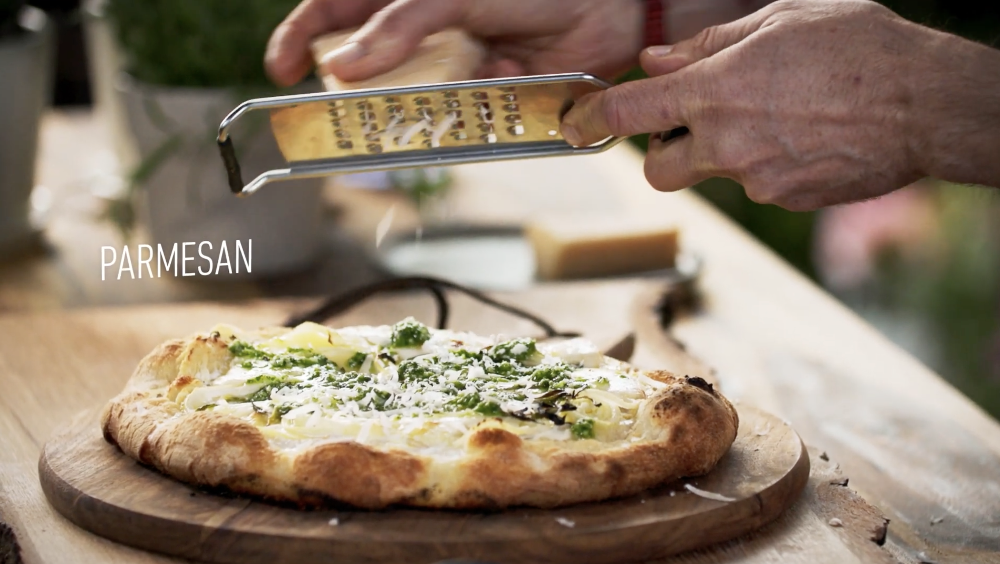

Sara Ruffini
Home
Projects
About
Contact
☰
I talk fast
I edit
faster
Showreel
Featured Projects
Select an object to view
PROJECT
PROJECT
Pocket Arcade Fever

Retro Reel
Disco Cocktail Club
Metabo Heat Lab
PROJECT.EXE
Meriwa Motel OS
Science Vids
Chef Tape Deluxe
Poster Boogie
*
*
~
~
design_services
A collection of work crafted with
heart
,
creativity
, and
storytelling
. Explore how I turn concepts into visuals that connect.
Read More About Me
arrow_forward
Let's create somenthing togheter • Let's create somenthing togheter • Let's create somenthing togheter • Let's create somenthing togheter • Let's create somenthing togheter • Let's create somenthing togheter •
Let's create somenthing togheter • Let's create somenthing togheter • Let's create somenthing togheter • Let's create somenthing togheter • Let's create somenthing togheter • Let's create somenthing togheter •